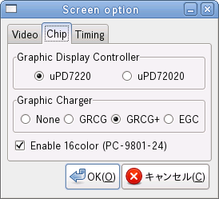

エミュレーションする GDC の設定をします。
| チップ | 機能・搭載機種 |
|---|---|
| μPD7220 | グラフィックのスクロール分割が 4 つです。 主に i386 以下の PC-9801 シリーズ |
| μPD72020 | グラフィックのスクロール分割が 2 つです。 主に i486 以降の PC-9801 / PC-9821 シリーズ |
エミュレーションするグラフィックチャージャータイプを指定します。
| チップ | 機能・搭載機種 |
|---|---|
| None | 使用しません。 初代PC-9801等 |
| GRCG | GRCGを使用します。 PC-9801VM |
| GRCG+ | GRCGと CG-Windowを使用します。 実際にはこのタイプのマシンは存在しません |
| EGC | EGCを使用します。(動作が重くなります) PC-9801VX以降 |
PC-9801VM,VX 以降の製品は GRCG はほぼ必須です。
EGC は市販ソフトではあまり使われませんが、逆にフリーソフト・同人ソフトでは EGC を要求するものが多数あります。
また、EGC の搭載を判定して GRCG と EGC を使い分けるソフトウェアもあります。
チェックをすると16色ボードを使用します。
PC-9801VMではオプション(PC-9801-24)ボードとして存在しています。
PC-9801VX以降では標準で装備されています。